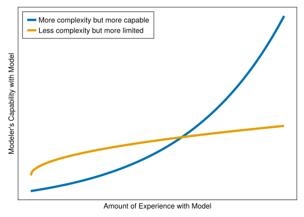

flowchart TD
Z[Other Inputs] --> D
A[Market Data Inputs] --> D
D[Model Assumptions] --> B[Model]
B --> C[Model Output]
C -->|Relates output back to| A
4 Elements of Financial Modeling
“Truth … is much too complicated to allow anything but approximations” - John von Neumann
4.1 In this Chapter
We explain what constitutes a financial model and what are common uses of a model. We explain what makes an adept practitioner.
4.2 What is a model?
A model represents aspects of the world around us distilled down into simpler, more tractable components. It is impossible to fully capture the everything that may affect the objects of our interest.
For example, say we want to simulate the returns for the stocks in our retirement portfolio. It would be impossible to try to build a model which would capture all of the individual people working jobs and making decisions, weather events that damage property, political machinations, etc. Instead, we try to capture certain fundamental characteristics. For example, it is common to model equity returns as cumulative pluses and minuses from random movements where those movements have certain theoretical or historical characteristics.
Whether we are using this model of equity returns to estimate available retirement income or replicate an exotic option price, a key aspect of the model is the assumptions used therein. For the retirement income scenario we might assume a healthy eight percent return on stocks and conclude that such a return will be sufficient to retire at age 53. Alternatively, we may assume that future returns will follow a stochastic path with a certain distribution of volatility and drift. These two assumption sets will produce output - results from our model that must be inpsected, questioned, and understood in the context of the “small world” of the model’s mechanistic workings. Lastly, to be effective practitioners we must be able to contextualize the “small world” results withing the “large world” that exists around us.
More on the “small world” vs “large world”: say that our model is one that discounts a fixed set of future cashflows using the US Treasury rate curve. If I run my model using current rates today, and then re-run my model tomorrow with the same future cashlows and the present value of those cashflows has increased by 5% I may ask why the result has changed so much in such a short period of time! In the “small”, mechanistic world of the model I may be able to see that the rates I used to discount the cashflows with have fallen substantially. The “small world” answer is that the inputs have changed which produced a mechanical change in the output. The “big world” answer may be that the Federal Reserve lowered the Federal Funds Rate to prevent the economy from entering a deflationary recession. Of course, we can’t completely explain the relation between our model and the real world (otherwise we could capture that relationship in our model!). An effective practitioner will always try to look up from the immediate work and take stock of how the world at large is or is not relfected in the model.
4.3 What is a Financial Model?
Financial models are those used extensively to ascertain better understanding of complex contracts, perform scenario analysis, and inform market participants’ decisions related to perceived value (and therefore price). It can’t be quantified directly, but it is likely not an exaggeration that many billions of dollars is transacted each day as a result of decisions made from the output of financial models.
Most financial models can be characterized with a focus on the first or both of:
- Attempting to project pattern of cashflows or obligations at future timepoints
- Reducing the projected obligations into a current value
Examples of this:
Projecting a retiree’s savings through time (1), and determining how much the should be saving today for their retirement goal (2)
Projecting the obligation of an exotic option across different potential paths (1), and determining the premium for that option (2)
Models are sometimes taken a step further, such as transforming the underlying economic view into an accounting or regulatory view (such as representing associated debits and credits, capital requirements, or associated intangible, capitalized balances).
We should also distinguish a financial model from a purely statistical model, where the often the inputs and output data are known and the intention is to estimate relationships between variables (example: linear regressions). That said, a financial model may have statistical components and many aspects of modeling is shared between the two kinds.
4.4 The Process of Building a Financial Model
TODO: Describe model building process and make associated diagram
4.5 Predictive versus Explanatory Models
Given a set of inputs, our model will generate an output and we are generally interested in its accuracy. The model need not have a realistic mechanism for how the world works. That is, we may primarily be interested in accurately calculating an output value without the model having any scientific, explanatory power of how different parts of the real-world system interact.
4.5.1 A Historical Example
Consider the classic underdog story where Copernicus overthrew the status quo when he proposed (correctly) that the earth orbited the sun instead of the other way around1.
The existing Ptolemic model used a geocentric view of the solar system in which the planets and sun orbited the Earth in perfect circles with an epicycle used to explain retrograde motion (as see in Figure 4.1). Retrograde motion is the term used to describe the apparent, temporarily reversed motion of a planet as viewed from Earth when the Earth is overtaking the other planet in orbit around the sun. This was accurate enough to match the obersvational data that described the position of the planets in the sky.

Famously, Copernicus came along and said that the sun, not the Earth, should be at the center (a heliocentric model). Earth revolves around the sun! Today, we know this to be a much better description of reality than one in which the Earth arrogantly sits at the center of the universe. However the model was actually slightly less accurate in predicting the apparent position of the planets (to the limits of observational precision at the time)! Why would this be?
First, the Copernican proposal still used perfectly circular orbits with an epicycle adjustment, which we know today to be inaccurate (in favor of an elliptical orbit consistent with the theory of gravity). Despite being more scientifically correct, it was still not the complete picture.
Second, the geocentric model was already very accurate because it was essentially a Taylor-series approximation which described to sufficient observational accuracy the apparent position of the planet relative to the Earth. The heliocentric model was effectively a re-parameterization of the orbital approximation.
Third, we have considered a limited criteria for which we are evaluating the model for accuracy, namely apparent position of the planets. It’s not until we contemplate other observational data that the Copernican model would demonstrate greater modeling accuracy: apparent brightness of the planets as they undergo retrograde motion and angular relationship of the planets to the sun.
For modelers today, this demonstrates a few things to keep in mind:
- Predictive models need not have a scientific, causal structure to make accurate predictions.
- It is difficult to capture the complete scientific inter-relationships of a system and much care and thought needs to be given in what aspects are included in our model.
- We should look at, or seek out, additional data that is related to our model because we may accurately fit (or overfit) to one outcome while achieving an increasingly poor fit to other related variables.
Striving to better understand the world is a good thing to do but trying to include more components into the model is not always going to help achieve our goals.
4.5.2 Examples in the Financial Context
4.5.2.1 Home Prices
American home prices which have a strong degree of seasonality and have the strongest prices around April of each year. We may find that including a simple oscillating term in our model captures the variability in prices better than if we tried to imperfectly capture the true market dynamics of home sales: supply and demand curves varying by personal (job bonus payment timing, school calendars), local (new homes built, company relocation), and national (monetary policy, tax incentives for home-ownership). In other words, one could likely predict a stable pattern like this with a model that contains a simple sinusoidal periodic component. One could likely spend months trying to build a more scientific model and not achieve as good of fit, even though the latter tries to be more conceptually accurate.

4.5.2.2 Replicating Portfolio
Another example in the financial modeling realm: in attempting to value a portfolio of insurance contracts a replicating portfolio of hypothetical assets will sometimes be constructed2. The point of this is to create a basket of assets that can be more quickly (minutes to hours) valued in response to changing market conditions than it would take to run the actuarial model (hours to days). This is an example where the basket of assets has no ability to explain why the projected cashflows are what they are - but retains strong predictive accuracy.
4.6 What makes a good model?
The answer is: it depends.
4.6.1 Achieving original purpose
A model is built for a specific set of reasons and therefore we must evaluate a model in terms of achieving that goal. We should not critique a model if we want to use it outside of what it was inteded to do. This includes: contents of output and required level of accuracy.
A model may have been created to for scenario analysis to value all assets in a portfolio to within half a percent of a more accurate, but much more computationally expensive model. If we try to add a never-before-seen asset class or use the model to order trades we may be extending the design scope of the original model.
4.6.2 Usability
How easy is it for someone to use? Does it require pages and pages of documentation, weeks of specialized training and an on-call help desk? All else equal, it is an indicator of how usable the model is by the amount of support and training. However, one may sometimes wish to create a highly capable, complex model which is known to require a high amount of experience and expertise. An analogy here might be the cockpit of a small Cessna aircraft versus a fighter jet: the former is a lot simpler and takes less training to master but is also more limited.
Figure 4.3 illustrates this concept and shows that if your goal is very high capability that you may need to expect to develop training materials and support the more complex model. On this view, a better model is one that is able to have a shorter amount of time and experience to acheive the same level of capability.

4.6.3 Performance
Financial models are generally not used for their awe-inspiring beauty - users are results oriented and the faster a model returns the requested results, the better. Aside from direct computational costs such as server runtime, a shorter model runtime means that one can iterate faster, test new ideas on the fly, and stay focused on the problem at hand.
Many readers may be familar with the cadence of (1) try running model overnight, (2) see results failed in the morning, (3) spend day developing, (4) repeat step 1. It is preferred if this cycle can be measured in minutes instead of hours or days.
Of course, requirements must be considered here too: needs for high frequency trading, daily portfolio rebalancing, and quarterly valuations are different when it comes to performance.
4.7 What makes a good modeler?
A model is nothing without it’s operator, and a skilled practitioner is worth their weight in gold. What elements separate a good modeler from a mediocre modeler?
4.7.1 Domain Expertise
4.7.2 Model Theory
4.7.3 Curiosity
4.7.4 Rigor
4.7.5 Toolset
… The skills in this book!
Prof. Richard Fitzpatrick has excellent coverage of the associated mathematics and implications in “A Modern Almagest”: https://farside.ph.utexas.edu/books/Syntaxis/Almagest/Almagest.html↩︎
See, e.g., SOA Investment Symposium March 2010. Replicating Portfolios in the Insurance Industry (Curt Burmeister Mike Dorsel Patricia Matson)↩︎